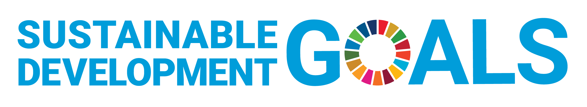

Click the icons to see more!
progress update
The Sustainable Development Goals are a call for action by all countries – poor, rich and middle-income – to promote prosperity while protecting the planet. They recognize that ending poverty must go hand-in-hand with strategies that build economic growth and address a range of social needs including education, health, social protection, and job opportunities, while tackling climate change and environmental protection. More important than ever, the goals provide a critical framework for COVID-19 recovery. Read more